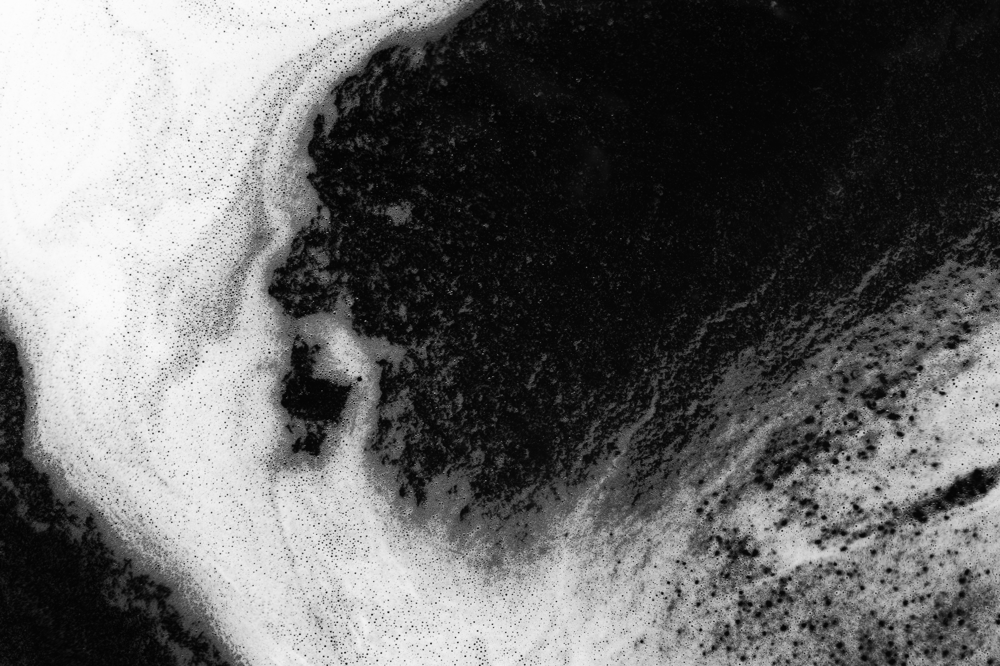
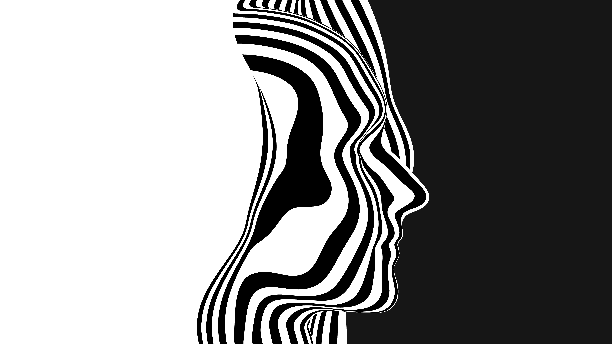

Seja bem vindo(a) ao meu projeto!
Vídeos
Músicas
Fotos
Vídeos
<
>
Músicas
MixKit- HipHop (0)
Mixkit- Tech House
MixKit- Sun and His daughter
MixKit- Hazy after hours
MixKit- A very Happy Christmas
Fotos

